제1장. 서론
1.1 연구의 배경과 목적
미국, 독일, 이스라엘 등 창업 선진국들은 초기 창업기업 육성과 별도로 높은 성장잠재력을 바탕으로 시장에서 끊임없이 가치를 창출할 수 있는 혁신성장 기업들을 위한 스케일업 중심의 정책을 추진하고 있다. (벤처기업협회, 2020) 우리나라도 1990년대 외환위기 및 2008년 글로벌 금융위기 이후 경제성장의 새로운 동력으로 중소기업의 성장을 정책적으로 지원하고 있으며, 지속적인 성장을 통한 양질의 일자리 창출 즉, 질적 성장을 이루고 있는 중소기업을 고성장기업, 고영향기업, 가젤형기업 등의 개념으로 정의하고 고성장기업은 저성장 기조의 뉴노멀 시대 경제발전 핵심동력으로 주목 받고 있다. (한양대학교 산학협력단, 2014)
[표 1] 가젤형기업에 대한 정의
(출처: 한양대학교 산학협력단, 2014)
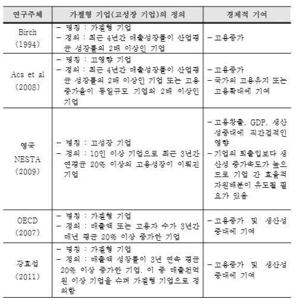
(출처: 한양대학교 산학협력단, 2014)
가젤형기업이란 연구 관점에 따라 가젤, 고성장기업, 고영향기업 등으로 정의되나 공통적으로 일정기간 내 매출액 또는 고용증가율의 측면에서 괄목할만한 성장세를 기록한 기업을 의미한다. 특히 OECD(2007)에서는 매출액 또는 고용자수가 매년(per annum) 20% 이상인 기업을 가젤형기업이라고 정의하고 있고, 실제적 측정에서는 3년간 연평균 20% 이상 성장한 기업이면 가젤형기업으로 볼 수 있다고 정의한다. (한양대학교 산학협력단, 2014)
가젤형기업 중에서도 매출액 또는 고용증가율이 3개년 연속 20%이상 증가한 기업 중 매출액이 1,000억원 이상인 기업을 슈퍼 가젤형기업으로 정의하는데, 일반 중소기업에 비해 고부가가치형 기술력의 확보, 높은 생산성과 고수익성, 지속적인 기술혁신활동 등을 통하여 우리 경제의 글로벌 경쟁력을 제고하는데 중추적인 역할을 담당한다. (권오형, 문종범, 김인섭, 2012)
최근 작지만 빠르게 성장하는 기업인 슈퍼 가젤형기업의 정의를 충족하는 밀키트 제조 스타트업 ㈜프레시지는 2018년 매출액 218억원에서 2021년 매출액 1,889억원을 시현하며 연평균 200%를 상회하는 높은 성장세를 보였고, 상시근로자수 또한 2019년 4월 88명에서 2020년 4월 251명으로 증가하여 중소기업의 고용창출에도 크게 기여하고 있다. 빠른 성장세를 기반으로 2022년 8월 캐나다 최대 연기금인 CPP(Canada Pension Plan Investment Board)와 홍콩계 사모투자펀드 앵커 에쿼티 파트너스(Anchor Equity Partners)로부터 6,500만달러(약 846억원) 투자유치에 성공하기도 했다.
세부적으로 혁신 사례연구대상 기업인 ㈜프레시지는 2016년 정중교 대표에 의해 설립되어 ‘요리로부터 세상을 자유롭게 하다’라는 기업철학을 바탕으로 밀키트(Meal-kit)를 국내에 본격적으로 알린 HMR 선도기업으로 국내 밀키트 시장점유율 1위를 차지하고 있다. 신석식품을 다루는 밀키트인만큼 식료품 포장을 위한 카토너, 필름 및 갈변방지 기술, 급속 냉동기술, 자동포장카토너 공정개발 등의 기술을 바탕으로 블랙라벨 스테이크, 밀푀유나베, 우삼겹 순두부찌개 등 밀키트 컨셉부터 패키지 구성까지 전 과정을 기획하여 생산하고 있다. 2019년 용인에 연면적 8천평 공간에 700억원을 투자하여 밀키트 전문 생산시설을 착공하였하고 2020년 8월 준공하였으며, 당해 기술보증기금의 예비유니콘기업, 중소벤처기업부의 자상한기업으로 선정되었다.
[그림 1] ㈜프레시지 재무현황 (단위:억원)
(출처 : 기술보증기금 내부자료 및 dart 기업공시 자료)
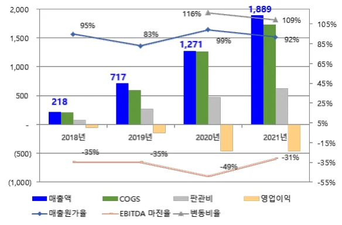
㈜프레시지는 매출액이 2018년 218억원에서 2021년 1,889억원으로 급격한 성장을 보이고 있으나 2019년 용인 공장에 대한 시설 투자, 경쟁기업과의 가격경쟁 등으로 인한 과도한 원가부담으로 지속 영업적자를 기록하며 2021년 기준 EBITDA 마진율 -31%를 나타냈다. 밀키트 산업 및 식품 제조업의 특성상 노동집약적이며 매출원가율이 높은 특징을 보이고, 2020년 대비 2021년 매출원가율이 낮아지며 원가부담이 소폭 완화되었음을 알 수 있다.
본 연구에서는 첫째, 기존 간편식품 시장에서 햇반, 비비고 등으로 시장을 선점하고 있는 CJ 제일제당이라는 대기업이 존재함에도 불구하고, 밀키트 제조 스타트업 ㈜프레시지가 등장할 수 있었던 배경은 무엇인지, 둘째, 창업 후 5년만에 매출 1,000억원을 돌파하며 밀키트 시장점유율 70%의 독보적 1위 기업으로 급성장한 ㈜프레시지의 핵심역량은 무엇인지, 셋째, 정책금융의 관점에서 기술기반 중소기업의 매출 성장은 고용증가에 어떤 영향을 미치는지, 그리고 기업정보를 바탕으로 기술기반 중소기업의 고용증가를 예측할 수 있는지 알아보고자 한다.
1.2 밀키트 산업에 대한 정의
밀키트 산업이 속한 가장 큰 분류인 식품산업 즉, 요리는 역사적으로 간편하고 조리시간을 단축하는 방향으로 변화해왔다. 1960년대까지 우리나라는 직접 농가에서 재배한 재료를 이용해 고추장, 된장, 간장 등을 장을 담그고, 이를 활용하여 직접 국, 탕, 찌개와 밥 그리고 반찬을 차려 먹는 농경사회의 특징을 보이고 있었다. 1970년부터 산업이 발전하고 급격하게 도시화가 진행되면서, 많은 주부들이 조리시간을 단축할 수 있는 태양초 고추장, 쇠고기 다시다, 진간장 등 양념장 기성품을 사용하기 시작했고, 주요도시 거점마다 홈플러스, 이마트 등 대형마트가 들어서면서 식품 코너에서는 손질된 닭, 고등어, 회 등의 신선식품을 판매하기 시작했다. 이후, 2000년대 들어서는 음식 포장기술의 발전과 함께 핵가족화의 경향이 두드러지며 간편하게 집 밥을 구현할 수 있는 햇반, 컵밥, 냉동만두, 비비고 국, 탕, 찌개류가 소비자들의 인기를 얻었다. 현재 2020년 코로나가 발생한 이후 물리적 이동의 제한으로 배달의 민족, 요기요 등 배달 플랫폼 이용률이 급격하게 높아지며 식품 산업의 주요 구성원으로 자리매김 하고 있다.
식품 산업 내에서도 가정간편식(HMR : Home Meal Replacement)이란 바로 섭취하거나 가열 등 간단한 조리과정을 거치면 식사로 대용할 수 있는 식품을 말한다. 농식품유통교육원에서는 소비자가 섭취할 때 필요한 조리정도에 따라
간편하게 해주는 Ready to prepared(RTP)에 해당한다. 식품의약품안전처에서는
하고 있는 식품공전상 식재료의 종류 및 조리 과정에 따라 즉석섭취식품, 즉석조리식품, 신선편의식품, 간편조리세트로 구분하고 있다.
[표 2]와 같이 가정간편식(HMR)을 4가지로 분류하고 있는데 밀키트는 요리를
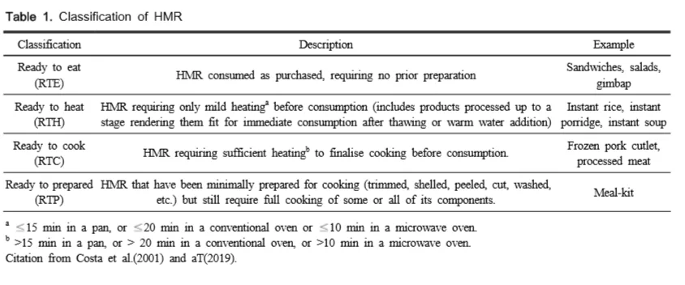
[표 3]와 같이 영업상 사용하는 식품, 식품첨가물 등에 관한 세부 기준을 수록
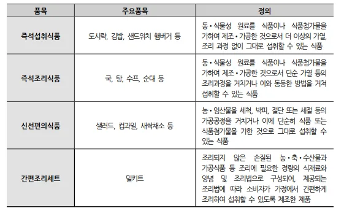
[표 2] 농식품유통교육원의 가정간편식(HMR) 분류
(출처: 엄하람, 황지희, 박나현, 문정훈, 이동민. (2021))
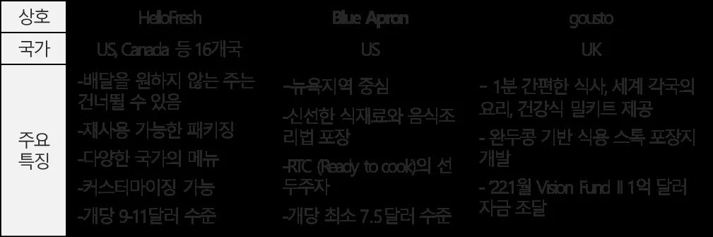
[표 3] 식품공전 체계상 가정간편식(HMR) 세부 분류
(출처: 2019 식품공전 해설서, 식품의약품안전처)
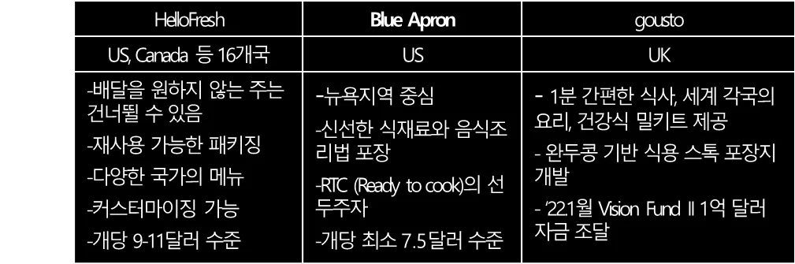
밀키트는 조리되지 않은 손질된 농, 축, 수산물과 양념 및 조리법으로 구성되어 소비자가 가정에서 간편하게 조리하여 섭취할 수 있도록 제조한 간편조리세트로 분류된다. 간편조리세트(밀키트)는 2020년 10월 ‘식품의 기준 및 규격’ 일부 개정 고시를 통해 신설된 식품유형으로 코로나19로 가정간편식에 대한 수요가 증가하자 제품의 특성을 고려한 보존, 유통기준, 제조, 가공기준 및 규격을 신설하고 식품안전관리 강화를 위해 신설되었다.
밀키트가 정의상 다른 가정간편식과 구분되는 특징은 선도 유지 즉, 짧은 유통기한으로 인해 국내산 원료 이용 가능성이 높다는 것이다. 한국농촌경제연구원, 서울대학교(2021)에 따르면 가정간편식 제조업체의 국내산 원료 사용 비율은 67.1%로 이는 식품제조업체 평균인 31.4%에 비해 높은 수준이며, 그 중에서도 밀키트는 국내산 원료 사용비율이 84.2%로 가장 높게 나타났다.
1.3 밀키트 산업 현황
코로나로 인한 정부의 고강도 거리두기 정책과 감염의 공포는 이동이 제한되는 물리적 변화를 야기하였고 이에 따라 가장 민감하게 반응하며 변화가 두드러졌던 분야는 바로 식생활 분야였다. 외식산업의 침체와 함께 배달 플랫폼의 이용률이 급격하게 높아졌으며, 한편 또 다른 한쪽에서는 건강한 식사에 대한 수요가 생겨나면서 간편식(HMR/밀키트) 제품, 신선 식재료 새벽배송 서비스 등을 포함한 푸드테크1) 산업이 두드러지게 성장했다. (혁신의 숲, 2022)
밀키트 산업은 해외에서도 코로나로 인한 성장이 가속화되고 있다. Grand View Research (2022, March)에 따르면 세계 밀키트 시장규모는 2021년 152억 달러(약 19조원)에서 연평균 17.4% 성장하여 2030년에는 644억 달러(약 81조원) 규모로 2021년 대비 약 3배 이상 커질 것으로 전망된다.
글로벌 시장에서의 밀키트 소비자 행태와 가격 수준을 살펴보자면, 미국에서 도시에서 사는 25%의 소비자들이 밀키트를 이용해본 적이 있다고 답했으며 미국 내 잠재적 밀키트 소비자의 63%가 밀키트를 이용하지 않는 주요한 이유로 높은 가격을 꼽았다. 이에 따라 미국 내 밀키트 시장은 가격경쟁이 심한 것으로 판단되고 평균적인 밀키트 가격은 약 5달러에서 11.5달러 수준이다.
세계 밀키트 시장에서 IPO를 한 주요기업으로는 HelloFresh, Blue Aporn, Marley Spoon, Goodfood 등이 있으며 국내와 달리 해외 밀키트 시장은 30분 이상 조리가 필요한 Ready to Cook 형태가 보편적이고 구독 모델(subscription model)을 주요한 비즈니스 모델로 운영하고 있는 것이 특징적이다.
[표 4] 밀키트산업 해외 주요기업 특징 비교
(출처 : 데이코 인텔리전스, 2022)
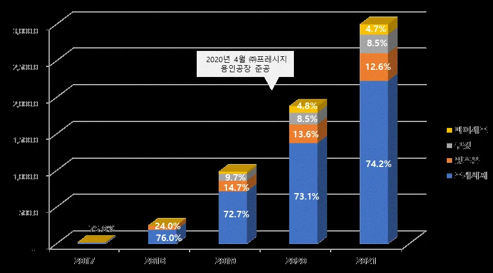
국내 수요자의 관심을 측정하기 위해 구글 트렌드 키워드 분석(국가: 대한민국)으로 밀키트와 프레시지에 대해 분석한 결과, [그림 2]와 같이 밀키트 검색량은 코로나 발생 이후 급격히 상승하여 2020년 2월까지 지속 증가하였으며, 프레시지 검색량은 정부의 사회적 거리두기 단계 강화 시 외식 소비를 대체하여 프레시지 검색량이 증가는 경향을 보였다.
이러한 국내 밀키트 산업의 주요기업의 특징을 한 마디로 요약하자면 중소 식품 스타트업의 약진으로 표현할 수 있다. 국내 주요기업들은 식품제조 파생 브랜드인 한국야쿠르트 잇츠온, CJ제일제당 쿠킷과 밀키트 전문 스타트업인 ㈜프레시지, 마이쉐프㈜, 테이스티나인 등으로 2가지 종류로 구분된다.
[그림 2] 코로나 이후 밀키트 및 프레시지 검색량 추이
(출처: 구글 트렌드 키워드 분석)
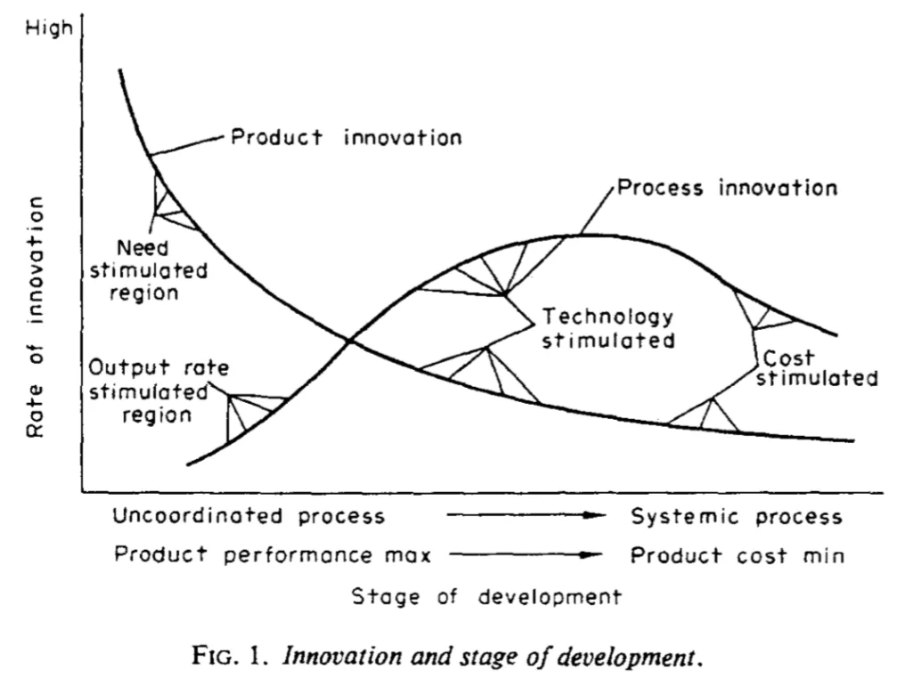
2017년 7월 처음 출시한 한국야쿠르트 잇츠온은 기존 구독모델의 강점을 갖고 있다. 전국 1만 1,000여명의 프레시 매니저(야쿠르트 아줌마)를 통해 제품을 빠르게 배송하는 차별점이 있고, 고급화된 밀키트를 위해 남성렬 셰프 등과 협업하여 총 9종 밀키트 출시하는 등 2020년 2월 기준 밀키트 80종을 공급하고 있으며, 2018년 4월 출시한 한달치 간편식 결제 서비스 ‘정기배송 서비스’의 2018년말 기준 누적 고객 수 약 15만명으로 추정된다. (임은주, 2020).
CJ제일제당의 쿠킷은 2016년 9월 반조리 간편식을 시장에 선보였으나 저조한 실적으로 2019년 4월 브랜드를 분리하여 밀키트를 재출시했다. CJ제일제당이 상품화, CJ프레시웨이가 식자재 등 원물 공급, CJ대한통운이 신선물류를 배송하는 등 계열사간 시너지를 강점으로 하며, 2021년 3월 기준 20-25가지 메뉴에 더하여 매달 8개 신메뉴 출시하는 등 적극적으로 시장 진출을 준비 중이다. (이주현, 2019)
건강한 식문화를 구현한다는 브랜드 철학을 기반으로 설립된 마이쉐프(Mychef)는 2019년 냉동밀키트를 출시하여 쿠팡, 이마트 등에 납품하면서 2019년 36억원, 2020년 110억원의 매출을 시현하였다. 밀키트 산업의 노동집약적 요소를 탈피하고 수익성 강화를 위해 경기도 성남시 스마트 공장 구축하여 공정 자동화를 추진하고 있으며, 2022년 4월 대한항공씨앤디서비스에 인수되어 향후 기내식에 특화된 밀키트를 생산할 것으로 예상된다. (이현석, 2021)
테이스티나인은 영업 적자에 고전하고 있는 다른 기업들과 달리 순이익을 기반으로 프레시지에 뒤이은 밀키트 업계 시장점유율 2위 기업이다. 원팬과 5분이내 조리 조건이 추가된 레디밀에 집중하고, 밀키트에 들어가는 채소를 ‘못난이 채소’를 활용하여 원가를 절반 수준으로 낮추면서, 채소가격 변동 최소화했다. 또한, 인큐베이팅 센터, 소규모 공장 구축하여 신제품 출시 및 시장 반응을 보고 판매량 증가하면 OEM 생산하는 등의 전략으로 영업흑자를 기록할 수 있었다. 테이스티나인은 2022년 1월 ㈜프레시지가 1천억원 규모에 인수하였으며, 이로 인해 업계 1,2위 기업간 M&A로 연합전선 구축되었다. (전설리, 2021)
[그림 3] 국내 밀키트 시장 기업별 매출액 및 시장점유율 (단위 : 억원)
(출처 : 식품산업통계정보, 2021 및 본인 작성)
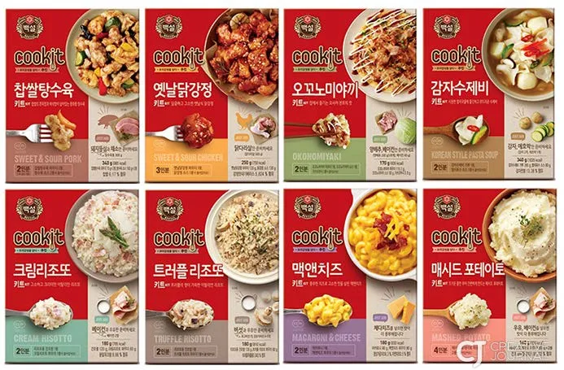
식품산업통계정보(2021)에 따르면 국내 밀키트 시장 규모는 2021년 3,000억원 규모의 시장규모에서 연평균 31% 성장하여 2025년 7,000억원 규모로 전망되며, 관련 업계에서는 시장규모가 1조원 넘어설 경우 대기업의 투자가 보다 적극적으로 확대될 것이라고 전망하고 있다. 2019년, 2020년 식품산업통계정보(2021)의 매출액 준용하고, 2017, 2018, 2021년 언론을 통해 보도된 기업별 매출액 기준으로 시장점유율 직접 추정하면 [그림 3]과 같다. 합병된 테이스티나인은 ㈜프레시지의 시장점유율에 합산하고, 쿠팡, 이마트 등을 통해 유통되는 ㈜프레시지 밀키트를 ㈜프레시지에 B2B 매출금액으로 합산하여 시장점유율을 직접 추정하였다. 2020년 4월 ㈜프레시지의 용인 공장이 준공되어 가동을 시작하면서 하루 생산능력이 3만개에서 10만개 수준으로 3배 증가한 점을 감안할 때, 국내 밀키트 산업은 2017년 시장 형성 이후 업계 1위인 ㈜프레시지의 성장과 함께 시장규모가 확대된 것을 알 수 있다.
제2장. 이론적 배경
2.1 Customers’ Jobs to be done
Customers’ Jobs to Be Done은 2005년 12월 Clayton M. Christensen 교수의 Harvard Business School Marketing Malpractices 수업에서 최초로 정의된 개념으로 파괴적 혁신 이론에 대한 보완적인 개념으로 발전되어 왔다. 파괴적 혁신 이론에서는 알려주지 않는 고객이 원하는 products and services를 창조해 나가는 과정에 대한 것으로, Customers’ Jobs to Be Done 이란 소비자가 주어진 상황에서 달성하고자 하는 것 또는 개선하려고 하는 것을 의미한다. 여기서 Customers’ Job의 의미는 개인의 성격, 제품의 속성, 기술적인 것보다 개인에게 주어진 상황이 더 중요하고, 주어진 그 상황에서 개인이 달성하고자 하는 것임을 뜻한다. (Clayton M. Christensen, Taddy Hall, Karen Dillon, David S. Duncan, 2016)
Customers’ Jobs to Be Done(이하 “JTBD”)의 Jobs은 단순한 기술이나 기능을넘어 기능적, 정서적, 사회적 차원을 포함하는데, 예를 들어 자녀들이 분가하고 난 뒤 규모를 줄여서 이사하는 5-60대를 수요자로 설정한 콘도 판매회사는 가족들이 함께한 추억이 가득한 dining room table을 두기 위한 창고 운영 등을 통해 콘도 판매율을 올릴 수 있었다. 즉, 소비자의 고민 사항을 해결하는 것이 고객의 스트레스를 줄이는 정서적 변화를 가져왔고 이것이 콘도 판매로 이어진 것이다. Clayton M. Christensen(2016)에서는 해결책이 없거나 부적절한 해결책만 있는 문제를 풀어내는 것이 좋은 혁신이라고 정의하고 있다.
2.2 제품혁신과 공정혁신
제품혁신과 공정혁신은 1975년 James M. Utterback과 William J. Abernathy이 기업 발전의 단계에 따라 혁신의 특징과 종류를 구분하여 제시한 개념이다. 제품혁신이란 제품의 사용자 혹은 시장수요를 충족시키기 위해 상업적으로 도입되는 새로운 기술 또는 기술의 조합을 의미하며, 신제품 생산을 위한 혁신을 일컫는다. 반면, 공정혁신은 최종제품을 생산하기 위한 생산장비, 인력, 업무, 투입재료, 정보흐름과 같은 생산체제의 혁신, 생산하기 위한 수단의 혁신을 의미한다. 제품혁신과 공정혁신은 [그림 4]와 같이 유동기, 전환기, 구체기로 이어지는 발전의 단계에 따라 그 정도가 달라지게 된다.
초기 유동기(Fluid Phase)에는 시장의 불확실성이 높고 소규모 신생기업이나 산업의 오래된 기업이 시장에 진출하는 경향을 보이며, 과학적 결과나 기술보다 시장수요에 의한 제품혁신이 활발하게 일어나고 성과극대화를 추구하게 된다. 반면, 표준화되지 않은 매뉴얼이나 수동조작 또는 범용기계로 생산되는 등 생산공정이 느슨하고 비효율적인 특징을 보여 유동기에는 공정혁신보다 제품혁신이 더 빈번하게 발생한다.
전환기(Transition Phase)에서는 소비자와 생산자의 경험이 누적되면서 시장 불확실성이 감소하고 제품차별화 경쟁이 심화되면서 소비자들의 loyalties와 선호가 발전되어 매출극대화를 위한 제품혁신이 일어난다. 또한, 가격경쟁의 시작으로 생산 체계를 효율적으로 운영하기 위해 기계적, 자동화 설비를 도입하는 등 지배적인 설계가 구축된다. 즉, 전환기에는 혁신의 종류가 제품혁신보다 공정혁신을 중심으로 변화하게 된다.
[그림 4] Utterback & Abernathy(1975) 발전의 단계와 혁신의 종류
(출처: James M. Utterback, William J. Abernathy. (1975))
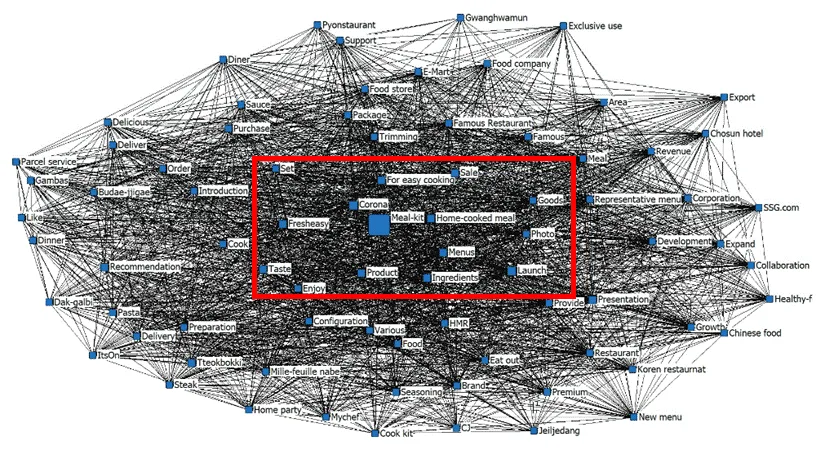
구체기(Specific Phase)에서는 제품이 표준화되고 산업 내 제품차별화 경쟁에서 가격경쟁으로 이동하게 되면서 과점의 양상을 보이고, 자본집약적인 특징을 보인다. 이 시기에 제품혁신은 가장 저조하며 기업은 원가최소화를 위해 설비를 해외로 옮기는 의사결정 등을 하게 된다. 더불어, 전환기에 가장 극대화된 공정혁신의 경우 이미 공정이 최적화되어 공정을 변경하는 재설계에 많은 비용이 소요되므로, 공정혁신 또한 감소하게 된다.
제3장. 혁신 사례연구
3.1 고객의 니즈를 파악한 서비스혁신
2016년 9월 식품대기업인 CJ제일제당은 백설 쿠킷 브랜드를 출시하며 반조리 편의식으로 밀키트 시장에 초기 진출한다. 예를 들어 찹쌀탕수육 반조리 편의식에는 원재료를 제외한 나머지 부재료와 소스로 구성되어 있는데 조리 시 소비자가 따로 준비한 닭고기나 돼지고기 등에 동봉된 파우더로 튀김을 만들고 소스로 맛을 더해 조리하는 방식이다. 소비자가 반조리 편의식을 구매하는 근본적인 이유는 요리를 간편하게 하는 것임에 반해, 백설 쿠킷은 원재료를 별도로 준비하거나 조리에 걸리는 시간이 길어 판매실적이 저조하였으며, 이후 2019년 4월 브랜드를 분리하여 밀키트를 재출시하게 된다.
[그림 7] 백설 쿠킷 반조리 편의식 예시
(출처 : CJ제일제당 홈페이지)
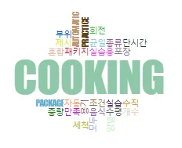
비슷한 시기인 2016년 ㈜프레시지는 미국의 Blue Apron을 롤모델로 하여 신선한 식재료를 손질하지 않고 그대로 배송하는 형태인 Ready to Cook 종류의 밀키트를 개발한다. 초기 제품은 소스, 레시피, 요리 설명자료 등으로 구성되어 이를 기반으로 조리 시 약 30분에서 1시간 오랜 시간이 소요되었다. CJ제일제당의 백설 쿠킷과 마찬가지로 ㈜프레시지의 초기 제품은 소비자에 외면 받았고, 판매실적 또한 저조했다. (허세민, 2019)
이후 ㈜프레시지는 소비자가 밀키트를 사용하는 근본적인 니즈가 무엇인지 고민한다. 즉, Customers’ Jobs to Be Done에 집중한 결과 고객이 밀키트를 사용(hire)하는 이유(needs)는 요리를 간편하게 하는 것이라는 결론과 함께 즉각적으로 5~15분내에 라면을 끓이듯이 쉽게 조리할 수 있는 형태의 밀키트를 제조하여 출시한다. 이 때 초기사업모델과 달리 고객의 니즈를 기반으로 생산된 밀키트는 신선식품인 채소 등을 직접 손질하고 가공해야 했고, ㈜프레시지는 신선재료 전처리 기술을 습득하기 위해 2018년 2월 관련 기업 ‘웰푸드’를 인수한다.
위와 같은 서비스 혁신으로 탄생한 ㈜프레시지의 밀키트 제조에는 신선재료 물류혁신을 기반으로 원물을 공급하고 제조 및 유통하는 것의 조화가 핵심역량으로 자리잡았다. 내부 인터뷰에 따르면 핵심역량을 강화하기 위해 많이 사용되는 채소 품목은 농가와 계약재배를 하고, 산지와 직거래를 하거나 원재료 가격 변동에 대비하여 비축 및 저장하는 등 다양한 방법을 활용하여 원물을 공급받고 있으며, 소스는 자동으로 포장하고 채소 및 육류의 가공은 용인 공장으로 오기 전에 산지와 가까운 1차 전처리 업체에서 위탁가공하여 제조 수율을 높이고 원가를 절감하고 있다.
㈜프레시지가 고객의 니즈를 제대로 파악하고 서비스 혁신을 이루었는지 판단하기 위해 이규태(2021)의 연구에 따라 분석결과를 인용하면 다음과 같다. 텍스톰을 활용하여 네이버, 다음, 구글 등 온라인 포털사이트의 다양한 키워드를 수집하는데, 핵심키워드는 밀키트로 선정하고 수집기간은 코로나19가 시작되는 시점인 2020년 1월부터 2021년 4월까지로 설정하여 분석한다.
우선 밀키트 키워드에 대한 연결중심성을 분석한다. 연결중심성은 한 키워드에 직접적으로 연결된 모든 엣지(Edge)의 개수로 지수를 평가하기 때문에 키워드와 인접한 키워드 간 연결관계를 중요시한다. 분석 결과 밀키트, 출시, 프레시지, 메뉴, 코로나 순으로 연결중심성이 높은 것으로 나타났으며 이는 소비자들이 코로나19 이후 밀키트 상품의 출시 및 메뉴에 대한 관심도가 증대했다고 해석됨과 동시에 밀키트 전문 기업인 프레시지에 대한 선호도가 높은 것으로 판단할 수 있다.
[그림 6] 밀키트 키워드 분석결과
(출처: 이규태, 2021)
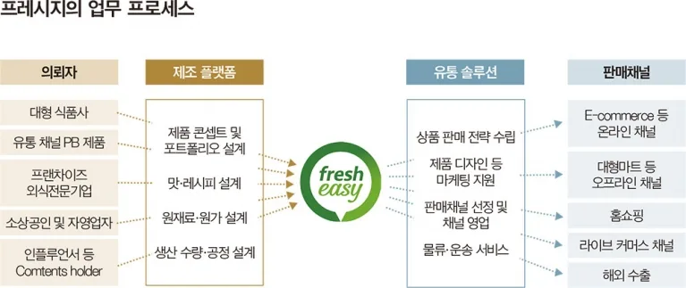
또한 밀키트 키워드에 대한 근접중심성을 분석한다. 근접중심성은 특정 키워드가 다른 키워드까지 도달하는 경로가 얼마나 짧은지를 나타내는 지표로, 분석 결과 밀키트, 집밥, 코로나, 간편조리식, 메뉴, 밀키트 제품, 식재료 순으로 근접중심성이 높은 것으로 나타났다. 이를 통해 밀키트가 가정 대용식으로 간편조리식을 지향하는 소비자의 니즈를 충족시키고 있다는 것을 알 수 있다.
㈜프레시지는 2020년 2월 25일 자동 조리 장치(Automatic cooking apparatus) 특허를 출원하였는데, 동사가 보유한 특허에서 많이 언급된 핵심 키워드를 분석하여 많이 언급될수록 단어를 크게 나타낸 결과 ㈜프레시지가 보유한 특허가 Cooking 요리를 간편하게 한다는 서비스와 높은 관계성을 보인다.
[그림 7] ㈜프레시지 보유 특허 분석
(출처: 혁신의 숲, 2022)
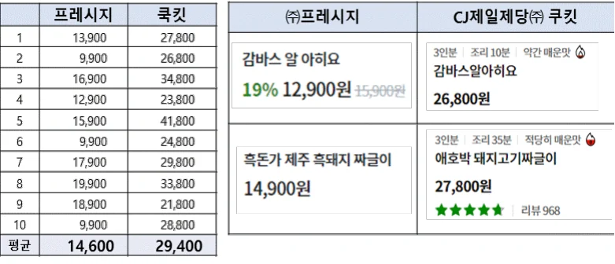
3.2 다양한 맛을 구현하는 제품혁신
본 장에서는 ㈜프레시지의 초기 매출확대에 주요 원인으로 작용한 제품혁신 전략을 구체적으로 파악해본다. 제품혁신과 공정혁신은 1975년 James M. Utterback과 William J. Abernathy이 기업 발전의 단계에 따라 혁신의 특징과 종류를 구분하여 제시한 개념이다. 제품혁신이란 제품의 사용자 혹은 시장수요를 충족시키기 위해 상업적으로 도입되는 새로운 기술 또는 기술의 조합을 의미하며, 신제품 생산을 위한 혁신을 일컫는다.
㈜프레시지는 밀키트 사용자의 다양한 맛에 대한 수요를 충족시키기 위해 다양한 신제품을 출시하고 있다. 2020년말 기준 밀키트, 반찬, 육가공, 샐러드 등 609종을 생산하고 있으며, 백년가게, 인플루언서 연계 협업 등으로 236종 퍼플리싱 제품을 생산하여 밀키트 누적판매량은 1,100만개를 돌파했다.
최근 밀키트 신제품 출시 트렌드는 지역성, 유명 맛집과의 연계를 통해 신상품을 출시하거나 요리사(쉐프) 또는 유명 인플루언서와의 협업으로 밀키트 제품 개발이 이루어지고 있다. (문정훈, 2021) ㈜프레시지는 2021년 신안촌 매생이굴국 밀키트, 노포 안일옥 소왕갈비찜 밀키트 등 지역 유명맛집 소상공인과의 협업을 통해 백년가게2) 신제품을 출시하였다. 또한, 유명 인플루언서 박막례 할머니와의 협업으로 개발한 비빔국수 밀키트와 국물떡볶이 밀키트는 판매 개시 직후 2~3만여 개가 모두 판매되는 인기를 얻었다.
㈜프레시지는 위와 같은 협업에 따른 신제품 개발을 푸드 퍼블리싱(publishing)으로 정의하고 적극 추진하여 제품혁신을 지속할 전망이다. 푸드 퍼블리싱이란 인플루언서‧외식전문기업‧소상공인 맛집 등 아이디어와 레시피(IP)를 보유한 파트너들이 간편식 시장에 쉽게 진출할 수 있도록 [그림 8]과 같이 밀키트 신제품의 기획부터 생산, 판매까지 전 과정의 솔루션을 제공하는 것을 의미한다. 백년가게, 인플루언서 연계 협업제품 236종을 푸드 퍼블리싱한 결과 2021년 기준 전체 매출 1,889억원의 30% 약 560억원을 차지하고 있다. (송경은, 2022) 내부 인터뷰에 따르면 ㈜프레시지는 아이디어나 레시피(IP) 제공자에게 해당 제품 매출의 약 2~4%를 제공하고 있으며, IP제공자에 대한 지급수수료가 2021년 연간 약 8.4억원으로 집계되었다.
[그림 8] ㈜프레시지 푸드 퍼블리싱 사업개요
(출처: 신윤애, 2022)
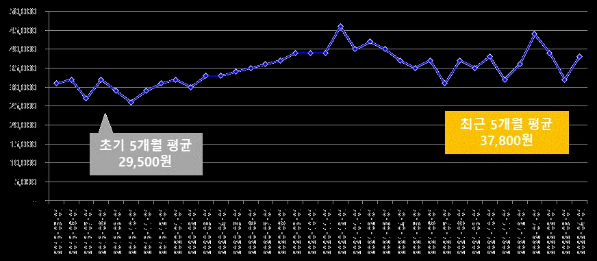
한편, 간편조리세트(밀키트)는 2016년 처음 시장에 출시되었을 때 냉장 밀키트 위주로 제조되었으나, 코로나19로 인해 저장성이 높은 식품에 대한 수요가 많아지면서 6개월에서 1년까지의 유통기한을 갖는 냉동 밀키트 제품들이 점차 출시되고 있다. 2020년말 기준 1,000개가 넘는 밀키트 출시되고 판매되었는데 그 중 냉장 밀키트가 90%, 냉동 밀키트는 10% 수준이다. (한국농촌경제연구원, 서울대학교, 2021) ㈜프레시지는 급속 동결건조 등 식감과 선도를 유지할 수 있는 냉동 프리저 기계 도입 이후 요리별 특성에 맞게 냉동 밀키트 개발을 위한 노력을 지속해 왔으며, 냉동 밀키트 라인으로 the Easy 부대찌개, 황태국, 순대국, 돈짜글, 소고기무국 등을 출시하였다. 이를 바탕으로 ㈜프레시지의 2021년 기준 냉장 밀키트 비중이 70%, 냉동 밀키트 비중이 30%로 냉동의 비중이 산업 평균 대비 높은 편임을 알 수 있다. 향후 원부재료 폐기율을 낮추고 원가절감을 위해 홈쇼핑 판매채널 위주로 냉동 비중을 높일 예정이며, 냉동 밀키트 제품의 출시는 신제품이라는 점에서 제품혁신의 요소에 포함한다.
3.3 가격경쟁과 공정혁신
본 장에서는 ㈜프레시지의 외형 및 시장지배력 확대에 주요 원인으로 작용한 공정혁신 전략을 구체적으로 파악해본다. 특히 공정혁신보다 제품혁신이 더 빈번하게 발생하는 초기 유동기를 지나, 전환기에 도달했는지 알아보기 위해 가격경쟁과 공정혁신을 다양한 관점에서 진단하고 분석한다. 공정혁신은 최종제품을 생산하기 위한 생산장비, 인력, 업무, 투입재료, 정보흐름과 같은 생산체제의 혁신, 생산하기 위한 수단의 혁신을 의미한다. 전환기에는 가격경쟁의 시작으로 생산 체계를 효율적으로 운영하기 위해 기계적, 자동화 설비를 도입하는 등 지배적인 설계가 구축되며, 혁신의 종류가 제품혁신보다 공정혁신을 중심으로 변화한다.
㈜프레시지는 경쟁사 CJ제일제당㈜ 쿠킷 대비 판매량 top 10 기준 및 동일 메뉴 기준으로 가격비교 시 소량의 밀키트에 대해 약 50% 수준으로 저렴하게 가격을 책정하고 있다. 내부 인터뷰 결과 현재 가격책정 방식은 밀키트 시장내 first mover로서의 점유율을 유지하기 위해, 우선 평균 외식가 대비 1/3~2/3 수준으로 가격을 책정한 후 즉, 판매가격에 대한 제한을 미리 정해두고 세부적인 생산 및 홍보 비용을 줄이는 구조로 이뤄진다. 한국농촌경제연구원(2021)에 따르면 한 가구가 외식할 때 회당 평균 약 45,000원을 지출하며 1인 가구의 1회 평균 외식 비용은 약 17,000원으로 조사되었다. [표 5]의 가격비교를 바탕으로 ㈜프레시지의 밀키트 가격이 45,000원의 약 1/3 수준임을 확인할 수 있다.
가격경쟁과 동시에 ㈜프레시지는 높은 원가부담을 개선하기 위해 생산체제의 혁신인 공정혁신을 추구하고 있다. 우선, 정기구독, 이벤트, 할인행사 등을 통해 동일 고객의 재구매율과 구매횟수를 높이고 고객단가를 높이고 있다. 혁신의 숲(2022) 국내 금융기관 및 카드사에서 제공받은 데이터를 분석한 자료에 따르면 ㈜프레시지의 재구매율 및 구매횟수는 1개월내 5.2%, 1.4회 3개월내 9.3%, 1.7회 6개월내 11%, 2.4회 12개월내 13.6%, 2.8회로 나타났다. 세부적으로
서 최근 5개월 평균 37,800원으로, 동사의 고객단가 상승을 통한 원가율 개선 노력을 알 수 있다.
[그림 9]와 같이 ㈜프레시지 월별 평균 고객단가는 초기 5개월 평균 29,500원에
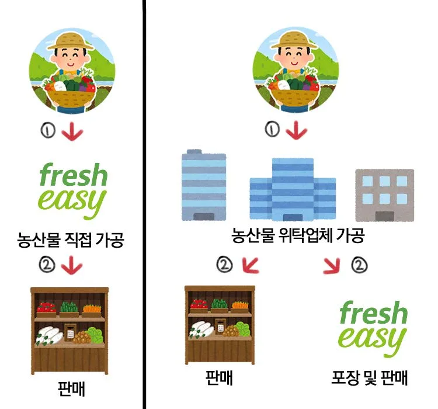
[표 5] 밀키트 판매량 top 10 및 동일메뉴 가격비교
(출처 : 각사 홈페이지)
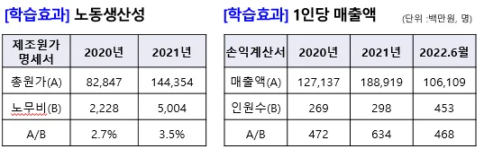
[그림 9] ㈜프레시지 월별 평균 고객단가
(출처: 혁신의 숲 data 본인 재가공)
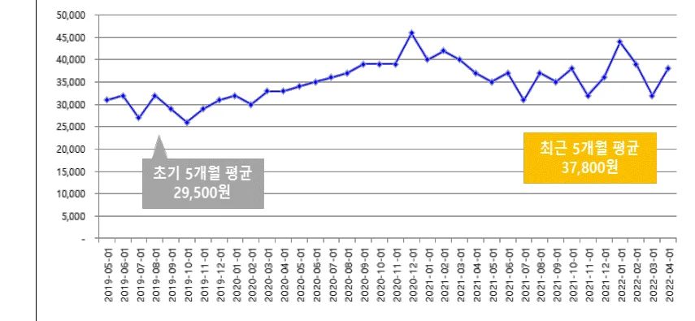
또한, ㈜프레시지는 수익성이 낮은 유통상품 매출비중보다 제품 제조매출의 비중을 확대하고 있다. 2020년 총 매출액 1,271억원(상품 549억원, 제품 717억원)으로 제품매출 비중이 56.4%를 기록하였으나, 2021년 총 매출액 1,889억원(상품 465억원, 제품 1,412억원)으로 제품매출 비중이 74.7%로 전년 대비 +20%p 증가한 것을 알 수 있다. 또한 경쟁사인 CJ제일제당의 쿠킷과 비교분석하자면, ㈜프레시지는 인하우스로 밀키트를 직접 제조하여 식품 표시사항의 제조원이 ㈜프레시지인 반면, CJ제일제당 쿠킷은 직접 제조하지 않고 각 제조원으로부터 구입한 채소, 소스, 고기 등을 단순 포장하여 판매하는 판매원으로서 식품 표시 사항에 유통전문판매원으로 분류된다.
다양한 제품을 시장 초기부터 개발하고 직접 제조 및 생산한 경험의 축적으로 ㈜프레시지는 공정혁신의 지배적 설계(dominant design)을 위한 기초를 다지고 있다. 2020년 Private Label 또는 Private Brand인 이마트의 PEACOCK, 쿠팡의 곰곰 등 유통을 기반으로 하는 대기업에서 밀키트 제조 및 생산을 ㈜프레시지에 OEM, ODM으로 위탁하여 생산하기 시작했다. 단순 유통전문판매업이 아닌 직접 밀키트를 개발하고 제조한 경험을 바탕으로 ㈜프레시지는 B2C를 넘어 B2B 매출이 확대되기 시작했고, 이는 슈퍼 가젤형기업인 동사의 매출성장세를 지속적으로 이어나갈 수 있는 원동력으로 작용하였다.
실제 내부 인터뷰에 따라 ㈜프레시지의 매출처 구성 비중을 분석한 결과, 2018년과 2019년 홈쇼핑과 컬리㈜ 등이 40% 자사몰, 카카오쇼핑 등 오픈마켓이 60%의 비중을 차지하고 있었으나, 2020년과 2021년에는 이마트, 쿠팡 등 유통대기업이 50%, 홈쇼핑과 컬리(주)가 20%, 오픈마켓이 30%의 비중을 차지했다. 이처럼 대기업 등 B2B 매출 비중의 확대는 ㈜프레시지가 밀키트 생산에 특화되어 지배적 설계를 구축할 가능성이 높다고 해석될 뿐만 아니라, B2C 대비 재고부담을 거래기업이 가져가는 구조로 앞으로의 기업 원가율 개선에 긍정적인 영향을 끼칠 것으로 판단된다.
마지막으로 ㈜프레시지는 밀키트에 들어가는 채소, 육류 등의 spec 모듈화 및 농산물 1차 전처리 공정 외주화를 통한 제조 공정을 개선하고 있다. 예를 들어, 양파 두께를 0.3mm, 0.4mm, 0.5mm로 냉장보관 시 언제 무르는지를 테스트하고 또한 양파, 마늘, 당근 등을 함께 포장했을 때 신선도 유지기간을 테스트하는 등 수백 번의 실험으로 찾은 신선도 유지에 최적화된 포장방법을 바탕으로 사업초기 밀키트의 유통기한이 3~4일에 불과했으나 현재 7~10일로 개선할 수 있었다. 또한, 돈육, 계육, 스테이크, 채소 등 밀키트에 들어가는 input 재료들의 spec을 표준화해서 서로 다른 밀키트 제품에 대체할 수 있도록 모듈화하고 이를 신제품 설계 시 반영하고 있다. 송경은(2022)에 따르면 ”하나의 밀키트 제품에 야채팩, 육류팩, 소스팩 등 보통 8~10개 팩이 들어간다며 파, 마늘, 양파 등 여러 메뉴에 공통적으로 들어가는 식재료는 규격화해 원가를 낮췄다”고 설명한다.
원물 모듈화와 더불어 사업 초기에는 산지에서 농산물을 매입하여 직접 용인 공장으로 운송하여 전처리 가공을 수행하였으나, 제조수율을 높이고 원가를 절감하기 위해 [그림10]과 같이 산지와 가까운 해당 지역에서 농산물 전처리 업체가 1차 외주가공 후 바로 포장하여 직판매하거나 ㈜프레시지의 용인 공장으로 운송되어 밀키트 구성품으로 포장된다.
[그림10] ㈜프레시지 농산물 전처리 외주화
(출처: 본인 작성)
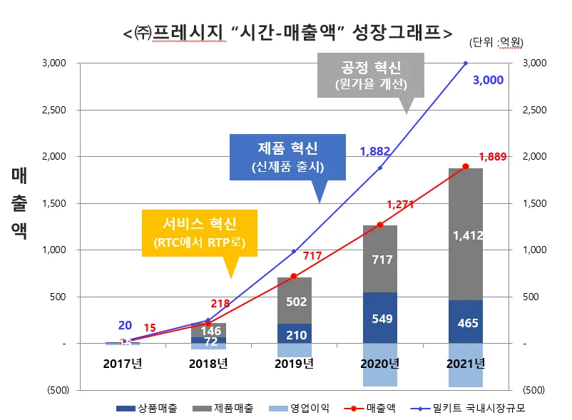
3.4 지배적 설계
현재까지의 가격경쟁과 공정혁신에 대한 논의를 바탕으로 과연 ㈜프레시지가 밀키트 산업의 지배적 설계를 보유하고 있다고 할 수 있을까? 일반적으로 지배적 설계는 학습효과, 규모의 경제, 네트워크 외부성, 정부 규제 등을 바탕으로 기술수용에 따른 수익체증이 존재할 때 발생한다. 지배적 설계에 대한 용어는 Utterback&Abernathy(1975) 최초의 논문에서 정립된 개념은 아니지만, 제품혁신과 공정혁신에 대한 후속논문에서 아래와 같이 정의된다. (지일용, 2021) 지배적 설계란 어떤 제품수명주기의 초반부에 수많은 시행착오 과정을 거친 이후 중반기의 한 시점에 나타나는 것으로서, 다른 대안들보다 시장에서 더 촉망받는 것(Teece, 1986) 또는 하나의 제품 카테고리를 대개 시장의 50% 혹은 그 이상 지배하는 하나의 제품 또는 프로세스 구조(Schiling, 2013)로 정의된다.
[표 6] ㈜프레시지 노동생산성 및 1인당 매출액
(출처: 기술보증기금, dart 감사보고서 등 본인 재구성)
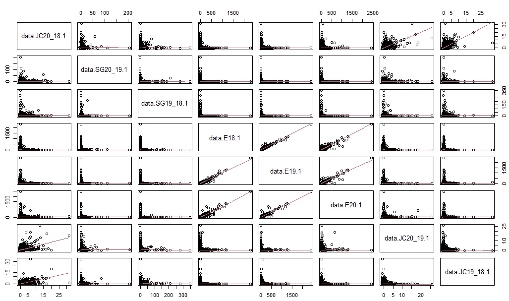
㈜프레시지에 학습효과와 규모의 경제가 발생하고 있는지 검증하기 위해 기술보증기금이 보유한 재무제표 및 고용보험가입자수를 기준으로 분석한 결과,
지하는 비중이 커지고 있어 노동생산성이 낮아진 것으로 판단된다. 매출액을 인원수로 나눈 1인당 매출액은 2020년에서 2021년 472백만원에서 634백만원으로 증가하였으나, 2022년 상반기 기업결합 M&A를 통한 근로자수가 일시에 반영되며 298명에서 453명으로 급격하게 증가함에 따라 2022년 6월 1인당 매출액이 468백만원으로 다시 감소하는 것을 볼 때, 현재 학습효과가 발생하고 있다고 보기 어렵다.
[표 6]과 같이 2020년 대비 2021년 제조원가명세서상 총원가에서 노무비가 차
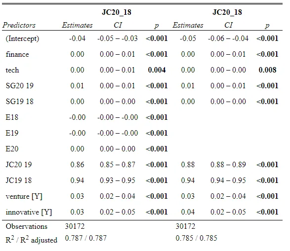
또한, [그림 1] ㈜프레시지 재무현황에서 알 수 있듯 매출액 대비 변동원가비율이 2020년 116%, 2021년 109%로 재료비, 인건비 등 변동원가비율이 높은 구조로 현재 규모의 경제가 발생하고 있다고 추정하기는 어렵다. 즉, ㈜프레시지는 공정혁신의 지배적 설계를 위한 기초를 다지고 있으나, 학습효과가 낮고 규모의 경제가 이루어지지 않아 현재 시점에서 지배적 설계를 보유하고 있다고 판단할 수 없다.
[그림11] ㈜프레시지 시간-매출액 성장 그래프
(출처: 기술보증기금, dart 감사보고서 등 본인 재구성)
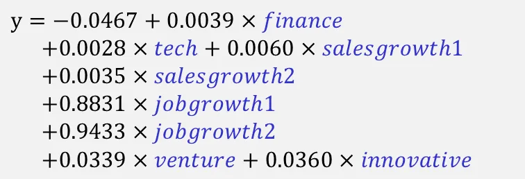
지금까지 논의한 ㈜프레시지의 제품혁신과 공정혁신에 대해 시간-매출액 성장그래프로 요약하자면 다음 [그림11]과 같다. 창업초기 2017년에서 2018년까지 고객의 니즈를 파악하여 제품 속성을 RTC(Ready to Cook)에서 RTP(Ready to Prepared)로 변경하는 서비스혁신으로 초기 시장은 선점했다. 이후 2020년 하루 최대 10만개의 밀키트를 생산할 수 있는 용인 공장을 준공한 이후 다양한 제품을 출시하였는데, 특히 인기 유튜버, 인플루언서 등과 협업하는 푸드 퍼블리싱 사업을 통해 타사와 차별화된 제품혁신 파이프라인을 구축할 수 있었다. 2021년과 현재까지는 치열한 가격경쟁이 이뤄지고 있으며, ㈜프레시지는 원가율 개선을 위해 고객단가 개선, 제품매출 비중 확대, OEM, ODM 등 B2B 매출 확대, 원물 모듈화 및 외주화 등의 노력을 기울이고 있다.
제4장. 성장과 고용의 관계분석
4.1 다중회귀분석
정책금융의 관점에서 슈퍼 가젤형기업과 같은 기술기반 중소기업에 자금을 지원하고, 기업의 매출 성장과 더불어 양질의 일자리를 창출하는 것은 매년 중요한 국정과제로 인식되어 왔다. 기획재정부에서 실시하는 2022년 공공기관 경영평가편람에 따르면 기술보증기금, 신용보증기금, 중소벤처기업진흥공단과 같이 중소기업을 지원하는 금융 공공기관은 “일자리 창출”이라는 국정과제를 달성하기 위해 “총 기업 지원금액 대비 기업의 고용인원 증가분”을 하나의 평가지표로 삼고 있다. 만약 중소기업의 기업데이터로 성장과 고용의 관계를 분석할 수 있다면 정책금융의 관점에서 고용창출효과가 높은 기업을 선별하여 효율적으로 지원할 수 있을 것이다. 그렇다면 업종, 매출액, 매출성장률 등 기업의 고용증가율에 가장 유의미한 영향을 끼치는 변수는 무엇일까? 또한 기업데이터를 기반으로 기업의 고용증가율을 예측할 수 있을까? 우선 다중회귀분석을 통해 고용증가에 영향을 미치는 변수를 찾고, 머신러닝(랜덤 포레스트)을 통해 기업데이터를 기반으로 고용증가여부를 예측 모델을 수립해보고자 한다.
분석대상 기업은 기술보증기금을 이용 중인 기술기반 중소기업 81,339개사 중 2018년에서 2020년 3개년 재무제표를 보유한 기업 32,796개사로 한정한다. 주요 변수는 기술성, 성장성, 일자리의 양, 일자리의 질, 혁신성을 의미하는 최종 기술평가등급(1~11등급), 재무등급(1~10등급), 최근 3개년 매출액, 최근 2개년 매출액 증가율, 최근 3개년 연도말 고용보험가입자수, 최근 2개년 고용증가율, 2020년 기준 매출액 대비 급여 비율, 통계청의 산업분류에 따른 업종코드, 산업은행 혁신성장정책금융센터에서 분류하는 혁신성장산업 해당여부, 벤처기업 인증여부, 이노비즈기업 인증여부로 한다. 종속변수는 2018년 대비 2020년 고용증가율로 설정하고, 나머지 변수들을 독립변수로 설정하여 분석한다.
R 프로그램을 활용하여 1차적으로 분석한 회귀모형에서는 기술평가등급, 최근 2개년 매출액성장률, 최근 3개년 연도말 고용보험가입자수, 최근 2개년 고용증가율, 벤처기업 인증여부, 혁신성장산업 해당여부의 독립변수가 신뢰수준 99.9%에서 모두 유의미한 것으로 나타났다.
[그림12] 주요 변수간 관계 시각화
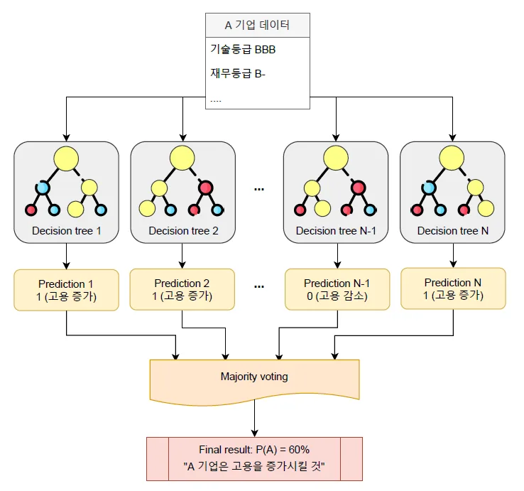
[표 7] 다중회귀분석 결과값
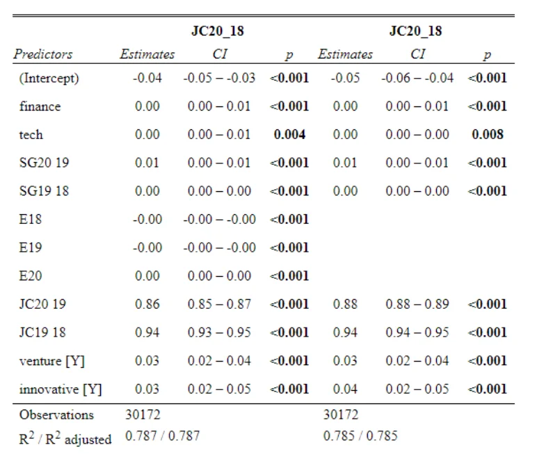
[표 8] 최종 다중회귀분석식
(출처: 본인 작성)
[표 9] ㈜프레시지 고용인원 수 및 고용증가율
(출처: 기술보증기금 자료)
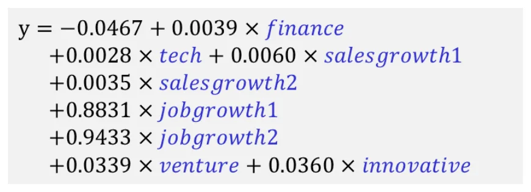
이후 다중회귀분석의 중요한 오류를 야기하는 다중공선성(Multicollinearity) 검증을 수행한다. 비확률변수간 선형관계로 정의되는 다중공선성은 설명변수간 선형방정식으로 표현되는 회귀모형의 신뢰도를 저하시키기 때문에 회귀모형의 구축과정에서는 세심한 검토와 대응이 이루어진다. (류시군, 2008) 즉, 1차 회귀모형의 연속형 범주들간 상관관계를 시각화한 결과, 특정 독립변수간 강한 상관관계(Variance Inflation Factor가 10보다 큰)를 나타내고 있었다. 최근 3개년 연도말 고용보험가입자수 변수간 높은 상관관계를 보이게 된 것은 중소기업 특성 상 구인난, 중소기업 재직자 장기근속공제 등으로 급격한 고용인원의 변동이 없다는 것에 기인한다. 따라서, 상관관계가 큰 최근 3개년 고용인원수는 독립변수에서 제거하고 모형을 재구축하였다. 특정 변수를 제거한 최종 다중회귀분석 모델의 결과값은 [표 7]과 같다. 최종 모형인 우측의 결과값을 보면 기술평가등급을 제외한 재무등급, 매출액증가율, 고용증가율, 벤처기업인증여부, 이노비즈기업 인증여부는 신뢰수준 99.9% 에서 유의미한 것으로 나타났으며, 조정 결정계수(Adjusted R-squared) 값이 78.5%로 설명력 또한 높은 수준임을 알 수 있다.
최종 회귀분석식을 정리하면 [표 8]과 같이 도출되고, 종속변수인 최근 2개년 고용증가율은 1차년도 고용증가율 및 2차년도 고용증가율에 영향을 크게 받는 것을 확인할 수 있다. 분석대상 기업인 ㈜프레시지의 2019년에서 2021년 기업데이터를 최종 회귀분석식에 대입하면, 결과값 y(0.148574) × 2019년 근로자수 266명을 계산하면 2019년 대비 2년 후 2021년 39.5명 증가한 305명 수준으로 분석된다. [표 9]와 같이 실제 ㈜프레시지의 고용인원수를 보면 298명으로 이와 유사한 것을 알 수 있다.
다중회귀분석 결과가 시사하는 바는 최근 2년동안의 고용증가율의 계수가 결과값(y)에 가장 많은 영향을 끼친다는 것이다. 이는 현재의 제도를 반영한 것이라고 볼 수 있는데, 예를 들어 기술보증기금의 일자리창출기업 선정평가표나 중소기업연구원의 일자리평가우수기업 선정평가표에 최근 2년동안의 고용증가율이 심사기준의 7~80% 비중을 차지하고 있다. 즉, 다중회귀분석을 통해 특정 기업변수가 고용증가율에 가장 큰 영향을 미치는지 확인하였고, 현 제도의 실질적 효과성이 있다는 것을 입증했다고 볼 수 있다. 다만, 다중회귀분석의 추정식은 미래를 예측하는데 그 한계가 있고, 다음 장의 머신러닝을 통해 기업변수로 고용증가율을 예측하는 모델을 수립해보고자 한다.
4.2 랜덤 포레스트
다중회귀분석을 통해 기업의 고용증가율에 가장 유의미한 영향을 끼치는 변수를 분석했다면, 과연 기업데이터를 기반으로 기술기반 중소기업의 고용증가확률을 예측할 수 있을까? 인공지능(AI) 머신러닝 방법론 중 랜덤 포레스트를 통해 기업 데이터를 기반으로 고용증가여부를 예측해보고자 한다.
랜덤 포레스트는 Breiman(2001)에 의해 개발된 분류기법으로 전통적인 의사결정나무 기법을 하나가 아닌 여러 개의 나무로 확장시킨, 의사결정나무의 메타학습(meta-learning) 형태를 갖고 있는 기계학습 기법이다. (김성진, 안현철, 2016) 랜덤 포레스트의 경우, 대수의 법칙에 의해 숲의 크기(나무의 수)가 커질수록 일반화 오류가 특정 값으로 수렴하게 되어 과적합화를 피할 수 있으며, 각 개별 의사결정나무들을 학습시킬 때 전체 학습용 자료에서 무작위로 복원 추출된 데이터를 사용하고 있어 잡음이나 이상치로부터 크게 영향을 받지 않는다는 장점이 있다. (한은정, 2004).
무엇보다 모형의 설계자가 입력변수 선정으로부터 자유로울 수 있어, 기업데이터를 기반으로 고용증가 예측을 분석하는데 적합한 기법이 될 수 있다. 보다 구체적으로 랜덤 학습 데이터 추출방법을 이용한 앙상블 학습법인 배깅(bagging)과 랜덤 노드 최적화(randomized node optimization)를 통해 각 결정트리로부터 얻어진 결과를 평균, 곱하기 또는 다수결 투표 방식을 통해 최종 결과를 도출한다.
다중회귀분석의 분석대상 기업의 업종, 기술평가등급, 매출액 등 동일한 데이터를 기준으로 학습하며, 30,172개사 중 27,000개사를 training set로, validation set를 대신하여 test sample을 2개를 설정하여 2,000개를 test1 sample, 1,172개를 test2 sample로 구분한다. [그림13]과 같이 기업데이터를 기준으로 2년 후 고용이 증가하면 1, 증가하지 않으면 0으로 구분하여 학습하며, 학습 시 트리의 최대 깊이는 4, 생성하는 트리 개수는 100개로 각 트리의 majority voting을 활용해 최종적으로 고용이 증가할 확률을 예측한다. 이렇게 구축된 예측모델의 성능을 평가(evaluation)했을 때, 정확도는 70.4%, out-of-bag 정확도 70.0%로 평가되어 충분히 신뢰성 있는 수준이 도출되었다.
[그림13] 랜덤 포레스트 분석 방법론
(출처: 본인 작성)
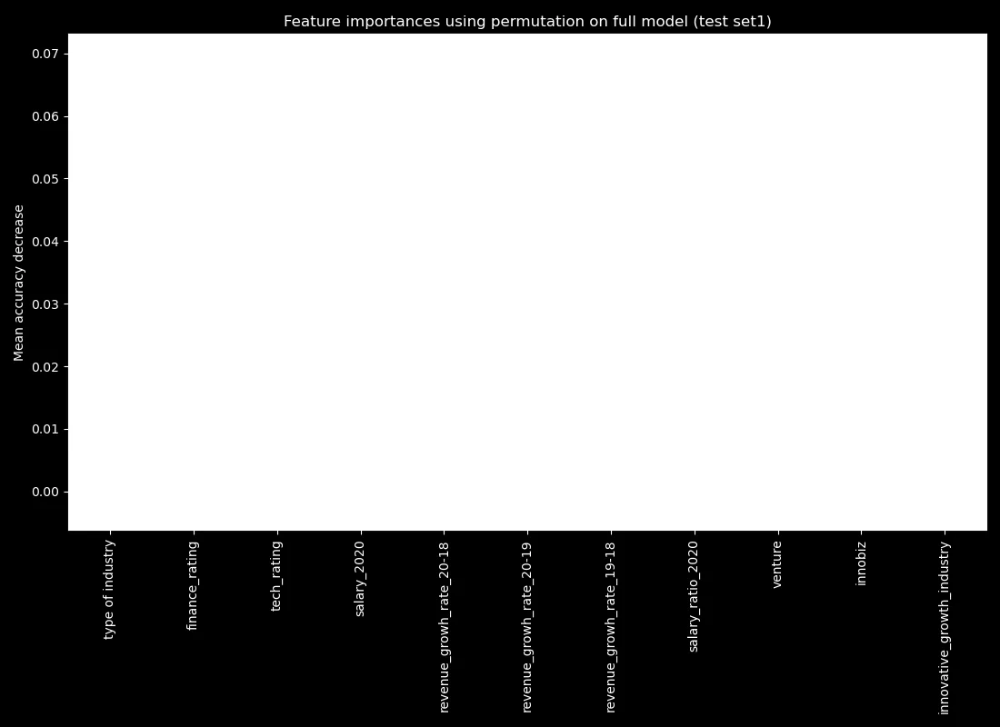
그렇다면 과연 고용증가예측에 결정적인 기여를 한 주요변수는 무엇일까? 단순한 방법으로는 각각의 의사결정 나무에서 선택된 변수들의 횟수를 더하는 방법이 있지만, 더욱 정교한 방법으로 Mean decrease in impurity (이하 ‘MDI’), Feature permutation 2가지 방법을 적용한다.
[표10] MDI 측정 방법론
(출처: 최종후, 서두성, 1998)
MDI는 불순도(impurity)를 측정하는 지니 지수(Gini Index)를 통해 계산한다. 지니 지수는 각 마디에서의 불순도 또는 다양도(diversity)를 재는 측도 중의 하나로 MDI는 지니 지수를 가장 감소시켜주는 예측변수와 그 변수의 최적분리를 자식마디로 선택한다. [표10]에서 n은 부모마디의 관측치 수를 말하고, nR과 nL는 각각 자식마디의 관측치 수를 의미한다. 즉, 자식마디로 분리되었을 때의 불순도가 가장 작도록 자식마디를 형성하는 것이다. (최종후, 서두성, 1998)
[그림14] MDI 분석결과
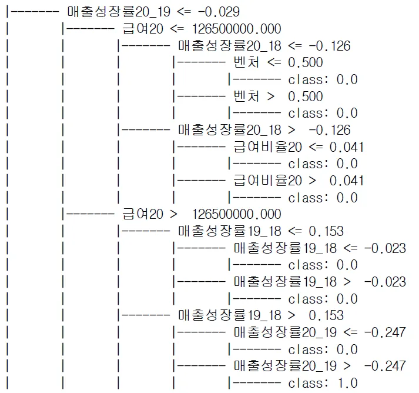
[그림14]와 같이 MDI 방식을 통한 주요변수는 매출성장률, 매출액 대비 급
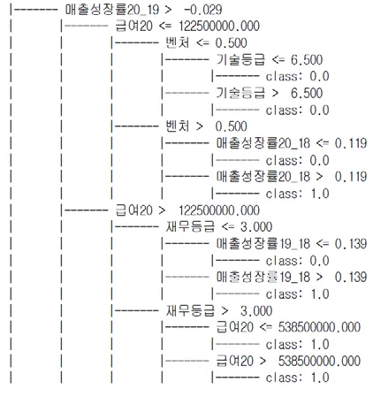
[그림15] Feature permutation (test 1)
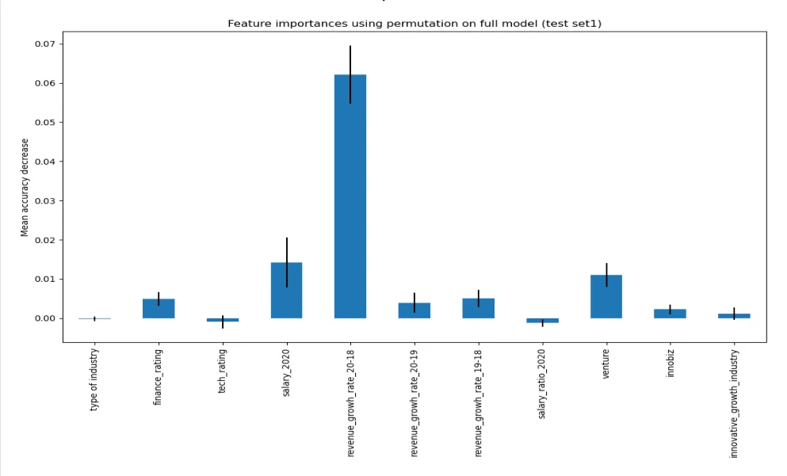
여비율, 벤처인증여부, 재무등급 등으로 분석된다. Feature permutation 방식은 feature importance를 계산하는 방법으로, 변수들을 무작위로 섞어서(permutation) 특정 변수(feature)를 결과값(Y)과 무관하게 만들어 예측모델에 활용될 수 없도록 설정한 후, 검증데이터(test1, test2) 셋에 대해 예측 성능(prediction performance) 변화를 확인하는 방법이다. 즉, 모델의 성능이 떨어지면, 중요한 feature, 성능이 좋아지면 중요하지 않은 feature로 구분한다. (Strobl, C., Boulesteix, AL., Zeileis, A. et al, 2007) [그림15] 및 [그림16]과 같이 Feature permutation 방식으로 분석한 결과 매출성장률, 2020년 손익계산서상 인건비 금액, 벤처인증여부 등이 중요한 변수로 작용했다.
MDI 분석과 Feature permutation 두가지 방식으로 분석해본 결과, 공통적으로 매출액성장률과 2020년 손익계산서상 인건비 금액, 벤처인증여부 등이 예측에 주요한 변수로 작용했음을 알 수 있다.
실제 각 변수(노드)들의 임계값을 확인하기 위해 랜덤 포레스트 학습에 사용된 트리 1개를 분석해보면 [표11]과 같다. 이를 통해서 실제 고용증가확률 예측(class:0 또는 1)을 하기 위해 사용된 주요변수인 매출액성장률, 2020년 손익계산서상 인건비 금액, 벤처인증여부, 재무등급등의 변수 임계값을 확인한다. 마찬가지로 아래 트리에서도 최근 매출액성장률과 2020년 손익계산서상 인건비 금액, 벤처인증여부가 주요변수로 선택되어 학습했다는 것을 알 수 있다. 3)
[그림16] Feature permutation (test 2)
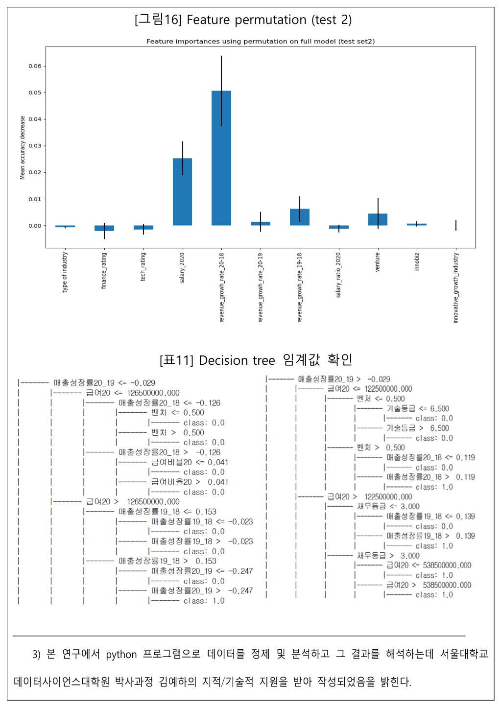
[표11] Decision tree 임계값 확인
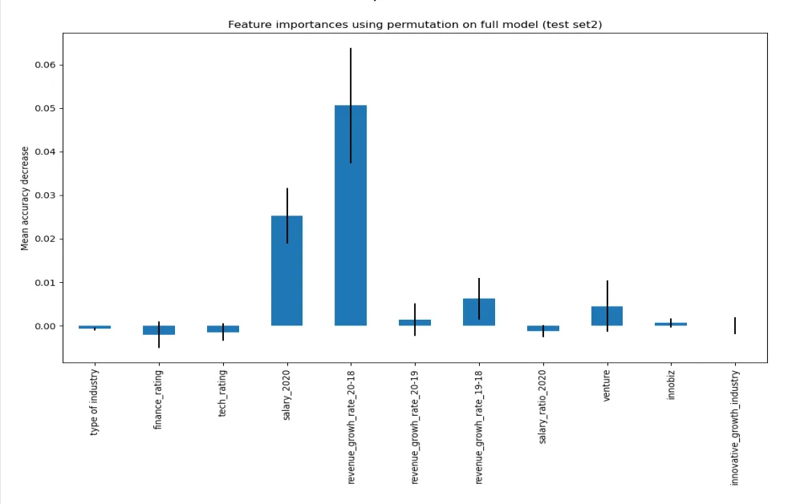
분석대상 기업인 ㈜프레시지의 2019년에서 2021년 기업데이터를 예측모델에 input 값으로 입력해보면 어떤 결과가 나올까? [표 9]의 ㈜프레시지 고용인원수와 데이터를 입력한 결과 2019년 대비 2021년 고용인원수가 증가할 확률은 75%로 산출되었으며, 실제 같은 기간 ㈜프레시지의 고용인원수는 269명에서 298명으로 증가하였다.
제5장. 결론 및 한계점
작지만 빠르게 성장하는 기업인 슈퍼 가젤형기업의 정의를 충족하는 밀키트 제조 스타트업 ㈜프레시지는 2018년 매출액 218억원에서 2021년 매출액 1,889억원을 시현하며 연평균 200%를 상회하는 높은 성장세를 보였고, 상시근로자수 또한 2019년 4월 88명에서 2020년 4월 251명으로 증가하여 중소기업의 고용창출에도 크게 기여하고 있다.
㈜프레시지의 핵심역량과 혁신방법론을 분석해보면, 창업 초기 2017~2018년 CJ제일제당과 같은 식품 대기업의 존재에도 불구하고 고객의 JTBD(Jobs-to-be-done)을 파악하여 제품 속성을 RTC(Ready to Cook)에서 RTP(Ready to Prepared)로 변경하는 서비스혁신으로 밀키트라는 신시장 창출 및 신제품을 출시하고 first mover로서 시장을 선점할 수 있었다.
2020년 4월 하루 최대 10만개의 밀키트를 생산할 수 있는 연면적 8,000평 규모의 용인 공장을 준공한 이후 백년가게, 박막례 할머니 비빔국수 등 다양한 제품을 출시하였는데, 특히 인기 유튜버, 인플루언서의 콘텐츠를 빠르게 밀키트로 기획, 제조, 생산 및 유통하는 “푸드퍼블리싱 사업”을 통해 타사와 차별화된 제품혁신 파이프라인을 구축하였다.
2021년에서 현재까지 치열한 가격경쟁이 이뤄지고 있으며, Utterback & Abernathy가 제시한 발전의 단계 중 전환기(Transition Phase)의 주요 특징인 공정혁신이 증가하기 시작했다. 즉, 가격경쟁과 더불어 효율적인 생산을 위해 고객단가 28% 상승, 제품 매출 비중(2020년 56.4% 2021년 74.7%) 확대, 쿠팡, 이마트 등 대기업 PB브랜드 OEM 생산을 통한 B2B 매출 확대, 원재료 모듈화 및 전처리 외주화를 중심으로 생산체제 혁신을 꾀하고 있다. 그 결과 매출액 대비 매출원가율 비중이 2020년 99%에서 2021년 92%로 개선되었음을 알 수 있다.
다만, ㈜프레시지는 Teece(1986) 등에 의해 정의되는 지배적 설계를 도입하기 위한 기초를 다지고 있으나, 최근 2년간 제조원가명세서상 급여비율이 높아지고, 1인당 매출액이 감소하고 있어 학습효과가 낮고 인건비, 변동비율이 총원가에서 차지하는 비용이 높아 규모의 경제효과가 있다고 보기 어렵다. 따라서, 현재 시점에서 지배적 설계를 보유하지 않은 것으로 판단된다.
다음으로 정책금융의 관점에서 일자리 창출은 정권을 막론하고 중요한 국정과제이며, 실제 기획재정부의 공공기관 평가 가이드라인에 따르면 중소기업 금융지원 금액 대비 고용증감인원수를 계량지표로 관리하고 있다. 이에 따라, 성장과 고용의 관계분석을 통해 고용이 증가하는 기업을 선별하고자 업종, 매출액, 매출성장률 등 기업의 고용증가율에 가장 유의미한 영향을 끼치는 변수는 무엇인지 다중회귀분석을 통해 회귀식을 도출했다.
분석대상은 기술보증기금에 보증 잔액이 있는 기업 8만개사 중 2018-2020년 F/S 보유기업 32,000개사, 그 중에서도 결측치를 제거한 후 30,172개사를 대상으로 기술보증기금 데이터베이스에 있는 정보들 중 기술성, 성장성, 일자리의 양, 일자리의 질, 혁신성을 의미하는 기술평가등급, 재무등급, 고용보험가입자수, 벤처/이노비즈여부, 매출액, 업종 등의 변수를 활용했다.
최종 모형에서 기술평가등급을 제외한 재무등급, 매출액증가율, 고용증가율, 벤처기업인증여부, 이노비즈기업 인증여부는 신뢰수준 99.9% 에서 유의미한 것으로 나타났으며, 조정 결정계수(Adjusted R-squared) 값이 78.5%로 설명력 또한 높은 수준임을 알 수 있다.
분석대상 기업인 ㈜프레시지의 2019년에서 2021년 기업데이터를 최종 회귀분석식에 대입하면, 결과값 y(0.148574) × 2019년 근로자수 266명을 계산하면 2019년 대비 2년 후 2021년 39.5명 증가한 305명 수준으로 분석된다. 실제 2021년 ㈜프레시지의 고용인원수를 보면 298명으로 이와 유사한 것을 알 수 있다.
그리고 다중회귀분석 결과가 시사하는 바는 최근 2년동안의 고용증가율의 계수가 결과값(y)에 가장 많은 영향을 끼쳤다고 볼 수 있다. 이는 현재 일자리창출기업, 일자리평가우수기업 선정평가 지표에 최근 2년동안의 고용증가율이 심사기준의 7~80% 비중을 차지하고 있어 현 제도의 실질적 효과성이 있다는 것을 입증했다고 볼 수 있다.
다만, 다중회귀분석의 추정식은 미래를 예측하는데 그 한계가 있고, 인공지능(AI) 머신러닝 방법론 중 랜덤 포레스트를 통해 기업 데이터를 기반으로 고용증가여부를 예측하는 모델을 수립했다. 기업데이터를 기준으로 2년 후 고용이 증가하면 1, 증가하지 않으면 0으로 구분하여 학습하며, 학습 시 트리의 최대 깊이는 4, 생성하는 트리 개수는 100개로 각 트리의 majority voting을 활용해 최종적으로 고용이 증가할 확률을 예측한다. 이렇게 구축된 예측모델의 성능을 평가(evaluation)해보니, 훈련세트 정확도는 70.4%, out-of-bag 정확도 70.0%로 평가되어 충분히 신뢰성 있는 수준이 도출되었다.
또한, 고용증가예측에 결정적인 기여를 한 주요변수를 파악하기 위해 Mean decrease in impurity, Feature permutation 2가지 방법을 적용해 분석해본 결과 공통적으로 매출액성장률과 2020년 손익계산서상 인건비 금액, 벤처인증여부 등이 예측에 주요한 변수로 작용했음을 확인했다.
분석대상 기업인 ㈜프레시지의 2019 ~ 2021년 기업데이터를 예측모델에 input 값으로 입력한 결과 2019년 대비 2021년 고용인원수가 증가할 확률은 75%로 산출되었으며, 실제 같은 기간 ㈜프레시지의 고용인원수는 269명에서 298명으로 증가하였다.
혁신사례 연구대상인 ㈜프레시지와 관련하여 최근의 혁신성과에도 불구하고 기업의 한계점은 분명하다. 코로나19 이후 산업 성장세의 둔화가 예상되고 누적된 영업적자로 인한 비즈니스 모델에 대한 의구심, 재고부담의 상승 등은 즉시 해결해야 할 문제들이다. 실제 2020년 △461억원 (영업이익률 -36.2%)에 이어 2021년 △466억원(영업이익률 -24.7%)의 영업적자를 기록하였으며, 2020년 대비 2021년 기말 재고부담이 74억원에서 193억원으로 증가함에 따라 재고자산회전율이 17회에서 9회로 활동성이 감소하였다.
이를 해결하기 위해 ㈜프레시지는 유관 산업의 기업을 적극적으로 M&A 하는 볼트온(Bolt-on) 전략으로 범위의 경제를 꾀하고 있다. '22년 6월 현재 프레시지는(제조+유통, B2B), 테이스티나인(홈쇼핑, B2C), 허닭(온라인 판매, 건강식), 닥터키친(건강식, 대체육 개발), 라인물류시스템(풀타임 콜드체인 물류) M&A를 통해 기업별 특화된 사업영역 시너지 효과를 기반으로 2022년 EBITDA 마진율 -5% 이내로 목표로 사업을 전개하고 있다.
또한 초기 영업적자에도 불구하고 코로나19 이후 가정간편식(HMR)이 2~30대 소비자 위주로 새로운 식문화로 자리 잡았으며 최근 고물가, 고금리, 고환율 현상에 외식비 부담이 높아지는 것은 시장 1위기업인 ㈜프레시지에 긍정적으로 작용할 전망이다. 통계청에서 발표한 2022년 11월 소비자물가동향의 내용에 따르면 11월 소비자물가지수는 전년동월대비 5.0% 상승하였으며, 품목성질별 동향 내 외식비는 전년동월대비 8.6% 상승하며 물가상승을 견인한 것으로 판단된다. 즉, 가정간편식(HMR) 업계가 외식 물가 상승에 따른 반사이익을 얻을 것으로 예상되고, 가구당 평균외식비를 기준으로 가격을 책정하는 ㈜프레시지는 가격인상으로 인한 매출상승 및 영업레버리지 효과를 바탕으로 수익성을 제고할 수 있을 것으로 예상된다.
마지막으로 본 연구에서는 ㈜프레시지 기업에 대한 사례분석을 통해 밀키트 제조 스타트업 ㈜프레시지가 등장 배경을 분석하고, 혁신 이론을 기반으로 기업의 핵심역량은 무엇인지 파악하며, 나아가 정책금융의 관점에서 기술기반 중소기업의 매출 성장은 고용증가에 유의미한 영향을 미치는지 분석했다. 다만, ㈜프레시지 개별 기업에 대한 사례분석으로 여타 중소기업의 혁신 전략에 일반화하여 적용할 수 없다는 한계점이 존재하며, 슈퍼가젤형 기업이 아닌 전체 중소기업을 대상으로 회귀분석 모델, 머신러닝 모형을 구축함으로써 ㈜프레시지와 같은 성장성이 높은 기업들이 가지는 고유한 요인을 도출할 수 없다는 한계를 지니고 있다. 향후 슈퍼가젤형 기업에 대한 기업데이터가 충분히 축적된다면 이를 바탕으로 고성장기업의 고유한 특징을 도출해내는 연구를 수행할 수 있을 것이다.
㈜프레시지가 현재의 수익성 악화, 재고부담 증가, 인건비 부담 가중에도 불구하고 동종 산업 내 M&A를 통한 시너지 효과, 범위의 경제 및 1위 기업의 시장지배력 강화를 바탕으로 또 다른 혁신이 달성할 수 있을지 기대하며 본 연구를 마친다.
Reference
Clayton M. Christensen, Taddy Hall, Karen Dillon, David S. Duncan. (2016, September). “Know your customers’ Jobs to Be Done”. Harvard Business Review, 54-62. Retrived from https://hbr.org/2016/09/know-your-customers-jobs-to-be-done Grand View Research. (2022. March). Size of the meal kit service market worldwide from 2021 to 2030 (ID 655037) [Data set]. Retrived from https://www.statista.com James M. Utterback, William J. Abernathy. (1975). “A dynamic model of process and product innovation”. Omega, 6(3), 639-656. Schilling, M. A. (2013). Strategic management of technological innovation. McGrow Hill. Strobl, C., Boulesteix, AL., Zeileis, A. et al. (2007). “Bias in random forest variable importance measures: Illustrations, sources and a solution”. BMC Bioinformatics 8, 25. Teece, D. J. (1986), “Profiting from technological innovation: Implications for integration, collaboration, licensing and public policy”. Research Policy, 15(6), 285-305. Vidya Mani, Douglas J. Thomas, Stephen E. Maiden. (2022, May 14). “Blue Apron: Has the supply chain disrupter been disrupted?”. Darden Case No. UVA-OM-1769, Available at SSRN: https://ssrn.com/abstract=4061068 권오형, 문종범, 김인섭. (2012). "수퍼 가젤형기업의 특성과 성공요인에 관한 탐 색적 연구". 기업가정신과 벤처연구, 15(2), 45-64. 기술보증기금. (2022). (주)프레시지 기업 조사자료. 김성진, 안현철. (2016). “기업신용등급 예측을 위한 랜덤 포레스트의 응용”. 산업 혁신연구, 32(1), 187-211. 김재희. (2020). R을 이용한 회귀분석 기초. 자유아카데미 데이코 인텔리전스. (2022, February 25). “2022 글로벌 식품, 외식산업의 푸드테 크 기술개발 동향과 사업화 전략”. Retrived from https://www.rebook.kr 류시균. (2008). “로짓모형에 있어서 다중공선성의 영향에 관한 연구”. 대한교통 학회지, 26(1), 113-126. 문정훈. (2021, April 07). “[시론] 코로나 장기화 시대에서의 간편식 트렌드“. 농수 축산신문. https://www.aflnews.co.kr/news/articleView.html?idxno=209344 송경은. (2022, June 16). "박막례 할머니 비빔국수, 밀키트 어떻게 만드나 봤더니 ". 매일경제. https://www.mk.co.kr/news/business/view/2022/06/529059/ 식품산업통계정보. (2021). “2022년 식품외식산업 전망대회 발표자료“. 44 신윤애. (2022, May 23). “박진호가 만난 TREND LEADING COMPANIES(6) 정중교 프레시지 대표”. 포브스. https://jmagazine.joins.com/forbes/view/336129 엄하람, 황지희, 박나현, 문정훈, 이동민. (2021). “국내 밀키트 신제품 개발 및 상 품화 전략을 위한 탐색적 연구“. Culinary Science & Hospitality Research, 27(6), 15-32. 월간APP. (2019, October 28). “독일 유니콘기업에게 배우는 스케일업“. app magazine. http://www.withpress.co.kr/archives/4501 유지원. (2021, March 02). “CJ제일제당, 쿡킷 코로나19 이후 월 20%꾸준히 성장 “. 더바이어. https://www.withbuyer.com/news/articleView.html?idxno=21126 이규태. (2021). “빅데이터를 활용한 밀키트에 대한 소비자 인식에 관한 연구: 코 로나 19 팬데믹 이후“. 관광연구저널, 35(11), 227-239. 이주현. (2019, April 16). “CJ제일제당, ‘쿠킷’ 브랜드로 밀키트 시장 진출“. 전자 신문. https://www.etnews.com/20190415000290 이현석. (2021, September 08). “밀키트 1위 프레시지, 상장 미루는 속내“. BUSINESS watch. http://news.bizwatch.co.kr 임은주. (2020, February 17). “한국야쿠르트 '잇츠온'으로 밀키트 시장 확대, 전동 카트로 배송 차별화“. 데일리팝. https://www.dailypop.kr 전설리. (2021, November 07). “밀키트 시장서 유일하게 적자탈출, 테이스티나인 흑자 이끈 세가지 비결“. 한국경제. https://www.hankyung.com 지일용. (2021). 기술혁신과 경영. 박영사. 최종후, 서두성. (1998). “데이터마이닝 의사결정나무의 응용”. 통계분석연구 4(1), 61-83. 통계청. (2022, December). “2022년 11월 소비자물가동향”. 한국농수산식품유통공사. (2021). “2021 가공식품 세분시장 현황 즉석조리식품“. 농림축산식품부. 한국농촌경제연구원. (2021, December). “2021 식품소비행태조사 기초분석보고 서“. Retrived from https://www.krei.re.kr/foodSurvey/index.do 45 한국농촌경제연구원, 서울대학교. (2021). “2020년 식품산업정보분석 전문기관 사업보고서”. 농림축산식품부. 한양대학교 산학합력단. (2014). “가젤형기업 육성을 위한 기반전략연구“. (과제번 호 TRKO201600016679). 중소기업청. 한은정. (2004). “건강검진 자료에서 Random Forests를 이용한 백내장 발생 위험 군 예측모형,” 연세대학교 대학원 의학통계학전공 석사학위논문. 허세민. (2019, September 30). “워런 버핏 꿈꿨지만, 경영학도 분석력으로 '밀키 트' 뛰어들었죠“. 서울경제. https://www.sedaily.com 혁신의 숲. (2022, April 07). “건강간편식 정기구독 서비스 분석“. Retrivied from https://innoforest.co.kr/report 혁신의 숲. (2022). (주)프레시지 [Data set]. Retrived from https://innoforest.co.kr/company?idx=CP00000555